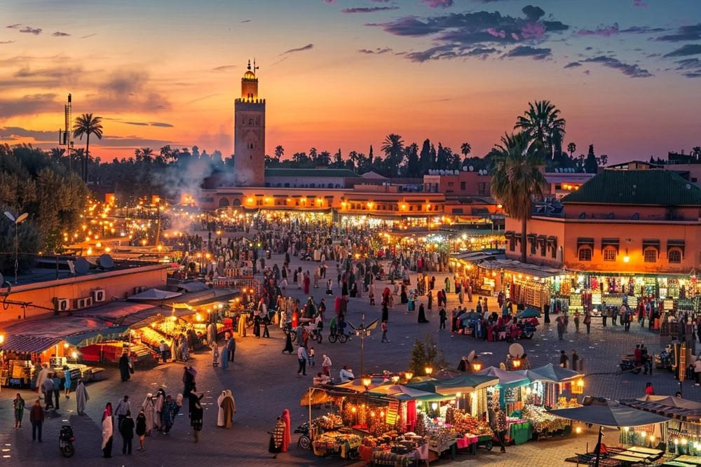

Un pays de couleurs,de payssages et de tarditions.
Rabat
Arabe,Amazigh
Dirham(MAD)
Environ 710 850 km² (en incluant le Sahara occidental)
Le Maroc, pays d'Afrique du Nord sur le littoral de l'Atlantique et de la Méditerranée, se distingue par ses influences berbères, arabes et européennes. La médina de Marrakech, quartier médiéval aux allures de labyrinthe, est un lieu animé, avec sa place Jemaa el-Fna et ses souks (marchés) vendant des céramiques, des bijoux et des lanternes en métal. La casbah des Oudayas à Rabat, la capitale, est un fort royal du XIIe siècle qui surplombe l'océan.Pour plus d'information